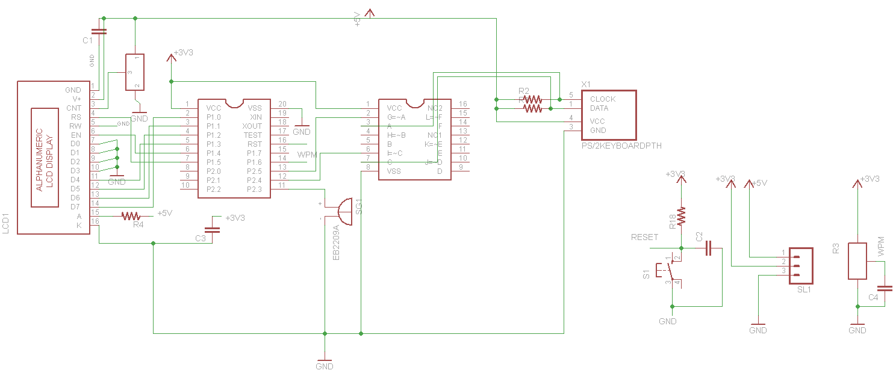
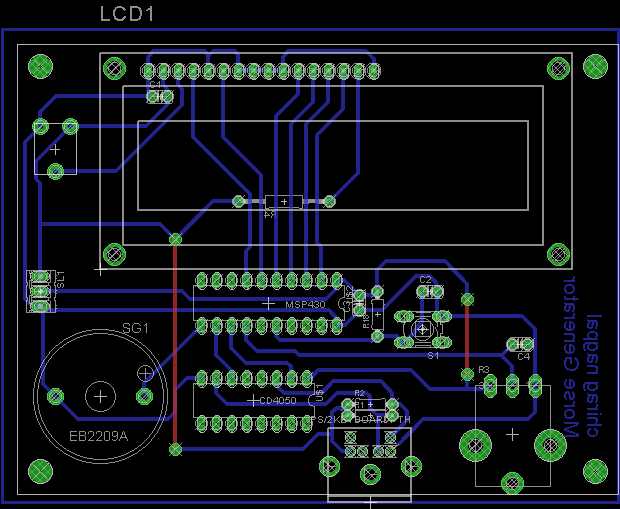
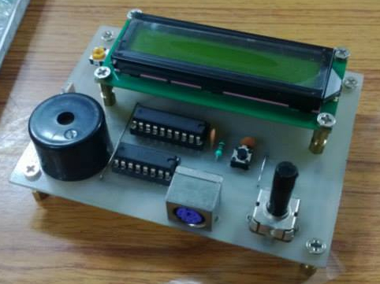

Morse Code Generator on MSP430
Having completed my freshman year at college, I decided to apply my knowledge 'hands-on' on some live project. At the same time I also heard about a month long workshop on the MSP430 at TI Center of Excellence at NSIT, Delhi under Prof. DV Gadre.
The program was to consist of 3 modules, the first week with PCB design in CADSOFT Eagle, the next phase was the basics of MSP430 and programming in C and the last consisted of a individual project. Sweet! I decided to apply for the program, and luckily was selected.!
During my sessions there, I got an opportunity to interact with Prof Gadre on Amateur Radio, he motivated me to apply for one, it is then that I decided to develop a Morse Code Generator on the MSP430.
For the project, I decided to interface a legacy PS/2 keyboard to the MSP430 to enter the text for which morse was to be generated. I also planned to put a 16x2 LCD to display the text. The morse was to be output on a piezo buzzer, instead of a speaker, allowing me to save a PWM pin.
The problem of using a PS/2 keyboard was
- Level Conversion from 5V(Keyboard) to 3.3V(MSP430)
For level conversion, first I decided to use BJTs, however in the final schematic, I used the CD 4050 Buffer IC, thus simplifying the conversion. - Implementing 2-way communication
The PS/2 is bi-directional, allowing the controller to send data to the keyboard, this is basically to toggle the LEDs on the keyboard. For my project, I did not require those indicators, and so decided to ignore this aspect, and implement a simple one way communication. - Implementing 2-way communication
So now that the basic design was considered, I went ahead with the schematic, this is what it looks like:

Now was the board layout, this being my first board layout of this scale, Prof Gadre, personally helped me routing the board. Check it out, cool eh!

The board was then etched on a copper clad board, using ferric chloride. Various components were soldered on the Board, and this was the result:

So it was now coding time! I used the MSP430 Launchpad as a programmer, this proved to be painful, as I had to remove the MSP430 many times and replace it in the launchpad to program. It's only after the board was etched and soldered that I learned about the spy-by-wire. I wish I had implemented this on my board, would have saved me from lot of trouble.
To implement PS/2, I attached an interrupt on the Clk pin of the PS/2. The ISR serving this was programmed in a way to detect the 11bit sequence on the Data line using a timing delay. The amount of delay cycles required was calculated by me by probing the clk line on the oscilloscope.
Next was the LCD, this was a tough nut to crack. All the standard libraries around on the net, for the MSP430 were for schematics wherein the LCD pins were connected to the MSP pins in a sequential manner. However in my design the pins were connected in a 'reverse' order. I tired porting libraries but in vain. I then decided to brute force and code the interface from scratch. After going through the HD44780 datasheet, I spent a night coding the interface and finally managed to initiate the LCD in '4-bit mode'.
I then moved on to code Morse Code for each and every character, and with that the project was complete. Take a look at the video of the project live: